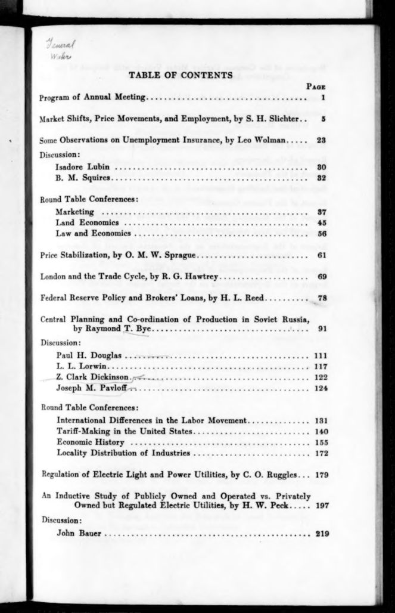

Hunter, 1929: quanto ônibus e caminhões devem pagar pelas estradas
Leitura: 8 min
Hunter defende que a tributação dos veículos comerciais siga a capacidade de pagar, e não só o custo das estradas, e propõe exigir certificados apenas dos transportadores públicos, deixando os caminhões por contrato à concorrência.


Em 1848, o estado de Nova York aprovou uma lei segundo a qual toda ferrovia paralela a um canal estadual, num raio de trinta milhas, pagaria as mesmas taxas que a carga teria pago se fosse pelo canal. M. H. Hunter, da University of Illinois, lembrou o caso como exceção: em geral, o público americano não reconheceu direitos adquiridos de transportes antigos diante do progresso, e deu terras e dinheiro às ferrovias mesmo sabendo que isso condenava os canais. Hunter falou logo depois de Trumbower, na mesma manhã de 29 de dezembro de 1928, e começou com um pedido de desculpas: chamado de última hora para substituir alguém no programa reorganizado, não conhecia o texto do colega e apoiava-se num relatório sobre tributação de veículos comerciais apresentado à National Tax Association, cujo comitê continuava a presidir.
Os veículos comerciais são necessários?
O preço do progresso, observa o autor, costuma ser pago por algum aventureiro anterior: o tipógrafo perdeu o ofício para a linotipo, e o cortador de pedra para a máquina. Se o transporte rodoviário tornasse obsoletos os meios existentes, o público não se sentiria obrigado a protegê-los, e quem sabe, acrescenta, em poucos anos ônibus, caminhões e carros não seriam substituídos por veículos aéreos. Hunter chega a lembrar que as notas dos bancos estaduais foram eliminadas por um imposto de 10% depois da criação do sistema bancário nacional, para mostrar que um meio novo poderia até justificar a supressão de um antigo.
As evidências, porém, não levavam a nenhum dos extremos. A conclusão do autor é que o transporte rodoviário comercial é conveniente ao público, se não necessário a seu maior desenvolvimento econômico: o ônibus é mais flexível em horários, pontos e rotas; cerca de um terço do território servido por ônibus não tinha serviço ferroviário, direto ou indireto; o caminhão faz sobretudo viagens curtas, mais rápidas e com menos manuseio, e leva muitos produtos perecíveis; e, onde os custos eram bem registrados, o transporte motorizado se comparava favoravelmente com os outros meios.
Quanto cobrar pelo uso da estrada?
O problema, para Hunter, é complexo. O governo construiu as estradas para uma necessidade pública; elas servem incidentalmente de leito aos transportadores comerciais, que jamais poderiam tê-las construído, e teriam sido construídas mesmo sem eles. Há precedentes: as ferrovias elétricas pagavam o calçamento entre os trilhos, limpavam ruas e removiam neve, e o imposto especial de franquia de Nova York tratava o uso da propriedade pública como imóvel tributável. Mas há também o princípio americano de cobrar taxas e licenças fixas por serviços públicos, sem relação com o custo nem com o benefício individual.
Todos os estados cobravam licença dos veículos, variando com a potência, o peso, a capacidade de carga ou o tipo de pneu, mas nenhum tentava ajustá-la ao benefício do proprietário. O imposto sobre a gasolina, usado em todos os estados menos Illinois e Nova York, media melhor o benefício: quanto mais uso da estrada, mais gasolina e mais imposto. Em Illinois, a taxa de dois centavos adotada em 1927 fora declarada inconstitucional pela redação da lei, não pelo princípio, registra o autor em nota.
Por que a capacidade de pagar?
Diante da dificuldade quase insuperável de repartir custos e medir benefícios, Hunter recorre a dois princípios do Motor Vehicle Conference Committee: nenhuma estrada deveria receber gasto público acima de sua capacidade de render, medida pelo transporte econômico, e os impostos especiais sobre o motorista não deveriam ser um ônus indevido. Combinados, levam à conclusão de que as estradas devem ser mantidas enquanto servirem ao bem público e pagas pelas fontes mais capazes de suportar o ônus.
“Não há razão para que o transporte motorizado não seja considerado uma base possível de receita para o fundo geral, assim como a propriedade, as heranças, as empresas ou as rendas.” (There is no reason why motor transportation should not be considered as a possible base to supply revenue to the general fund just as is property, estates, corporations, or incomes.)
Num estado, o transporte motorizado poderia pagar mais que todo o gasto com estradas, e o excedente iria para a educação ou outro fim; em outro, as estradas teriam de receber recursos do fundo geral. A mudança seria mais de ênfase do que de métodos: a licença ficaria com as funções regulatórias, como registro, controle de peso e de pneus, e o imposto sobre a gasolina seria tão alto quanto possível sem reduzir o bem-estar público para o qual a estrada existe, e por isso mais uniforme entre os estados.
Para os veículos comerciais, nada muda: como agente de transporte, o caminhão de aluguel deve ser tratado como o de uma empresa que transporta sua própria carga; como agente de renda, seu lucro não deve ter mais imunidade fiscal que o de qualquer outro negócio. O problema de tributar o transporte comercial, diz Hunter, é só o de tributar uma atividade produtiva.
O que a regulação deve exigir?
A tributação, porém, não resolve tudo, e não se separa da regulação. As estradas pertencem ao público, e seu uso por ônibus e caminhões para ganho privado é um uso incomum, que as autoridades podem condicionar como quiserem, até proibi-lo. Pode ser do interesse público não deixar uma linha de ônibus destruir um sistema existente cujo serviço ela não pode prestar, ou permitir que a ferrovia preste o serviço rodoviário sem concorrência independente, economizando garagens, mecânicos e despesas gerais. Hunter cita a Suprema Corte de Illinois, no caso Egyptian Transportation System v. Louisville and N. R. Co., que anulou um certificado concedido a uma linha de ônibus porque a ferrovia, de responsabilidade financeira muito maior, se dispunha a ampliar o serviço.
Ao contrário do ônibus, consolidado em rotas, horários e tarifas fixos, o caminhão era em geral negócio de donos de um ou poucos veículos, que levavam hoje a carga de um cliente a um lugar e amanhã a de outro. O transporte rodoviário era essencialmente local, mas, perto das divisas, cruzava os estados; a Suprema Corte, nos casos Duke e Buck v. Kuykendall, negou aos estados o poder de exigir certificado de transportadores interestaduais, porque o certificado decide quem usa a estrada e não como, e não cabe no poder de polícia. O resultado, segundo Hunter, foi a rápida expansão de transportadores interestaduais, alguns por subterfúgio, e projetos de lei federal ainda sem resultado.
O autor conclui com quatro exigências: conservar o interesse público nas linhas ferroviárias e elétricas e coordenar com elas o transporte rodoviário; sobrecarregar o mínimo possível a Interstate Commerce Commission, delegando às comissões estaduais os casos interestaduais; exigir de todo operador de aluguel uma fiança que garanta boa-fé e responsabilidade financeira; e exigir certificados de conveniência e necessidade apenas dos transportadores públicos, quase todos de ônibus. Entre os caminhões por contrato, sem tendência monopolista, a concorrência asseguraria preço razoável. Hunter cita, por fim, o conselho de um membro da Interstate Commerce Commission: apressar-se devagar.
Na minha leitura
Na minha leitura, o trabalho de Hunter desloca a discussão da regulação para as finanças públicas. Sua proposta de tratar o automóvel como base tributária geral, e não só como pagador das estradas, rompe com a ideia de um fundo rodoviário fechado e põe a gasolina ao lado da propriedade e da renda como fonte de receita do Estado.
Na regulação, converge com Trumbower na proteção às ferrovias, mas separa com mais nitidez o ônibus, tratado como serviço público, do caminhão por contrato, deixado à concorrência. A distinção entre transportador público e por contrato, com consequências diferentes para a entrada no mercado, organizaria a legislação dos anos seguintes.
Glossário
- Imposto sobre a gasolina
- tributo cobrado por galão de combustível, tratado por Hunter como medida aproximada do uso das estradas.
- Capacidade de pagar
- princípio tributário segundo o qual o ônus deve recair sobre as fontes mais capazes de suportá-lo, e não apenas sobre quem se beneficia do gasto.
- Imposto especial de franquia
- imposto do estado de Nova York que tratava o direito de usar a propriedade pública como imóvel tributável.
- Poder de polícia
- poder dos estados americanos de regular atividades em nome da segurança, da saúde e do bem-estar públicos.
- Transportador por contrato
- operador que transporta para clientes específicos sob acordo, sem se oferecer ao público.
Fontes
- The Commercial Motor Vehicle and the Public — M. H. Hunter (University of Illinois) (pp. 236–245). Internet Archive (número completo, PDF)
- Edição completa, com os demais artigos: Nº 212 do Arquivo.
Documento em domínio público (EUA, publicado antes de 1931), via JSTOR Early Journal Content e Internet Archive. Resumo e comentário do autor deste site, sem afiliação com a American Economic Association. Encontrou um erro? Escreva: a correção é publicada no próprio texto, com data.
← Trumbower, 1929: quem pedia a regulação dos ônibus e caminhões ↑ Nº 212 · Chicago, 1928: desemprego, crédito, planejamento soviético e a regulação da energia e das estradas